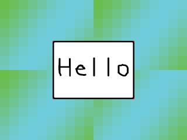
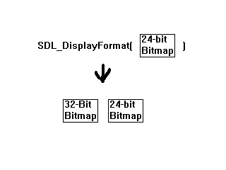
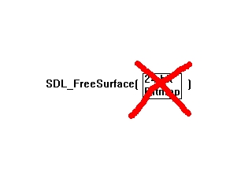
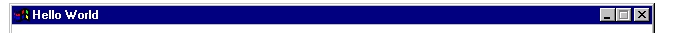
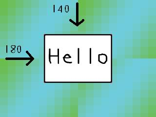

既然你已经在上一课的第二部分学会了在窗口中显示一张图片，那么现在是时候改用更高效的方法加载表面和Blit。译者注：Blit的含义是内存中图像的位块传输，指的是将某一表面的全部或部分图像复制到另一表面上。只是我不清楚把它翻译成“位块传输”是否合适，故不翻译此词汇，应该不会影响阅读和理解。
//头文件 #include "SDL/SDL.h" #include <string>
这些是这个程序所用到的头文件。
SDL.h被包含了进来，很明显是因为我们要使用其中的函数。
string头文件也被包含了进来...呃...我不喜欢使用char*，更喜欢用std::string。
SDL.h被包含了进来，很明显是因为我们要使用其中的函数。
string头文件也被包含了进来...呃...我不喜欢使用char*，更喜欢用std::string。
//窗口属性 const int SCREEN_WIDTH = 640; const int SCREEN_HEIGHT = 480; const int SCREEN_BPP = 32;
这里有多个不同的窗口属性。
我确信你能看出来
我确信你能看出来
SCREEN_WIDTH 和 SCREEN_HEIGHT 的含义。SCREEN_BPP 是位/像素。这里所有的教程都是用的32位颜色。译者注：目前基本所有图形化的操作系统默认都采用32位色（即“真彩色“）显示整个视窗系统，即每一像素用32位表示，其中分别是红色、绿色、蓝色和Alpha混合（即RGBA），各占8位。
//将要使用的表面 SDL_Surface *message = NULL; SDL_Surface *background = NULL; SDL_Surface *screen = NULL;
这是3个即将使用的图像表面。
"background" 很明显是背景图片， "message" 是一张写着"Hello"字样的图片， "screen" 很明显是程序窗口。
记住：在不使用一个指针变量时，将它设为NULL，这是一个很好的习惯。.
"background" 很明显是背景图片， "message" 是一张写着"Hello"字样的图片， "screen" 很明显是程序窗口。
记住：在不使用一个指针变量时，将它设为NULL，这是一个很好的习惯。.
SDL_Surface *load_image( std::string filename )
{
//临时的空间，用于存储刚刚加载好的图像
SDL_Surface* loadedImage = NULL;
//优化后的图像，实际使用的是这个图像
SDL_Surface* optimizedImage = NULL;
这是我们加载图片的函数。
这个函数的作用是加载一张图片，然后返回一个指向优化后的图像表面的指针。
其中参数"filename"是要加载的图片的文件路径。 "loadedImage" 是我们加载好图像后得到的表面。"optimizedImage" 是最终实际使用的表面。
译者注：
std::string是C++的String，如果您不了解C++，也可以使用C的String，即char*或char数组。下面代码中用到的filename.c_str()是C++ String的取指针操作，返回类型为char*，指向字符串首字符地址，即可理解为C++ String转C String，所以这里用哪种String都没问题。这个函数的作用是加载一张图片，然后返回一个指向优化后的图像表面的指针。
其中参数"filename"是要加载的图片的文件路径。 "loadedImage" 是我们加载好图像后得到的表面。"optimizedImage" 是最终实际使用的表面。
//加载图像
loadedImage = SDL_LoadBMP( filename.c_str() );
一开始，图像是通过
但是这个图像不能立即使用，因为这个位图是24位色的，而窗口是32位色的， 将一个表面blit到另一个不同格式的表面上不是一个好主意，因为这样SDL会在每次blit时做一次临时性的格式转换，这会导致程序的运行效率降低。
SDL_LoadBMP()加载的。
但是这个图像不能立即使用，因为这个位图是24位色的，而窗口是32位色的， 将一个表面blit到另一个不同格式的表面上不是一个好主意，因为这样SDL会在每次blit时做一次临时性的格式转换，这会导致程序的运行效率降低。
//如果加载图片没有出错
if( loadedImage != NULL )
{
//创建一个优化了的图像
optimizedImage = SDL_DisplayFormat( loadedImage );
//释放临时的图像
SDL_FreeSurface( loadedImage );
}
下面我们要检查一下图片是否加载成功，如果加载发生了错误，loadedImage会被设为NULL。
如果图片加载成功，我们就调用
而在每次blit时都创建一个转换后的表面会浪费机器的处理能力并降低程序运行速度。由于我们在加载表面时就已经将其格式转换好了，所以当你要将此表面应用到窗口上时，它已经与窗口具有相同格式，那么SDL就不必进行临时的格式转换了。
所以现在我们有2个表面：旧的加载得到的表面和新的优化处理后的表面。
所以我们调用
如果图片加载成功，我们就调用
SDL_DisplayFormat() 来创建一个与窗口拥有同样格式的新版本的图像。之所以这么做，是因为当你尝试将一个表面粘贴到另一个不同格式的表面时，SDL会自动转换它的格式，使它们具有相同的格式。而在每次blit时都创建一个转换后的表面会浪费机器的处理能力并降低程序运行速度。由于我们在加载表面时就已经将其格式转换好了，所以当你要将此表面应用到窗口上时，它已经与窗口具有相同格式，那么SDL就不必进行临时的格式转换了。
所以现在我们有2个表面：旧的加载得到的表面和新的优化处理后的表面。

SDL_DisplayFormat() 创建了一个优化后的表面，但是没有去除原来的表面。所以我们调用
SDL_FreeSurface() 去掉原先加载得到的表面。

//返回优化后的表面
return optimizedImage;
}
然后返回优化后的表面。
void apply_surface( int x, int y, SDL_Surface* source, SDL_Surface* destination )
{
//新建一个临时的矩形来保存偏移量
SDL_Rect offset;
//将传入的偏移量保存到矩形中
offset.x = x;
offset.y = y;
这里我们有一个表面blit函数。
它需要传入的参数分别是blit的位置坐标，blit的源表面和blit的目标表面。
首先我们将偏移量保存到一个SDL_Rect中。我们这么做是因为
SDL_Rect是一个表示矩形的数据类型。它包含了4个成员变量：矩形分别在X、Y轴上的偏移量和矩形的宽、高（即：x,y,width,height）。这里我们只关心其中的x和y。
它需要传入的参数分别是blit的位置坐标，blit的源表面和blit的目标表面。
首先我们将偏移量保存到一个SDL_Rect中。我们这么做是因为
SDL_BlitSurface()仅接受SDL_Rect里设定的偏移量。
SDL_Rect是一个表示矩形的数据类型。它包含了4个成员变量：矩形分别在X、Y轴上的偏移量和矩形的宽、高（即：x,y,width,height）。这里我们只关心其中的x和y。
//执行表面的Blit
SDL_BlitSurface( source, NULL, destination, &offset );
}
现在我们可以通过
其中第一个参数是我们要用到的源表面。
不用担心第二个参数，现在我们仅需将它设为NULL。
第三个参数是我们将要Blit的目标表面。
第四个参数保存了Blit的目标位置。
SDL_BlitSurface()执行表面的Blit。
其中第一个参数是我们要用到的源表面。
不用担心第二个参数，现在我们仅需将它设为NULL。
第三个参数是我们将要Blit的目标表面。
第四个参数保存了Blit的目标位置。
int main( int argc, char* args[] )
{
现在开始我们的main函数。
使用SDL时，你总是需要使用
或者
的方式声明main函数，
使用int main(), void main(), 或者任何其他类型的都不能正常工作。
使用SDL时，你总是需要使用
int main( int argc, char* args[] )
或者
int main( int argc, char** args )
的方式声明main函数，
使用int main(), void main(), 或者任何其他类型的都不能正常工作。
//初始化SDL的所有子系统
if( SDL_Init( SDL_INIT_EVERYTHING ) == -1 )
{
return 1;
}
这里我们使用
我们传给
虽然我们可能并不使用所有的子系统，但即便把它们都启动了，也并不会对程序造成太大的影响。
如果SDL不能初始化，这个函数会返回-1，此时我们通过返回1来解决这个错误，这会终止程序的运行。
SDL_Init()来启动SDL。
我们传给
SDL_Init() 的参数是SDL_INIT_EVERYTHING，这意味着启动SDL的所有子系统。SDL的子系统包含了视频、音频、计时器等等，它们都是用于构建游戏的独立的引擎组件。虽然我们可能并不使用所有的子系统，但即便把它们都启动了，也并不会对程序造成太大的影响。
如果SDL不能初始化，这个函数会返回-1，此时我们通过返回1来解决这个错误，这会终止程序的运行。
//设置窗口
screen = SDL_SetVideoMode( SCREEN_WIDTH, SCREEN_HEIGHT, SCREEN_BPP, SDL_SWSURFACE );
现在是时候创建我们的窗口并获取窗口表面的指针了，这样我们就可以blit图像到窗口上了。
你已经知道前三个参数的含义了，那么第四个参数的含义是在系统内存(译者注：或称”软件内存“)中创建窗口表面。
你已经知道前三个参数的含义了，那么第四个参数的含义是在系统内存(译者注：或称”软件内存“)中创建窗口表面。
//如果设置窗口时出现错误
if( screen == NULL )
{
return 1;
}
如果显示窗口时出现了问题，screen会被设为NULL。
//设置窗口标题
SDL_WM_SetCaption( "Hello World", NULL );
这里窗口的标题被设为"Hello World"。
标题是窗口的一部分：
标题是窗口的一部分：

//加载图片
message = load_image( "hello.bmp" );
background = load_image( "background.bmp" );
现在使用我们写好的图像加载函数来加载这两张图片。
//将背景图片background应用到screen上
apply_surface( 0, 0, background, screen );
现在是时候使用我们写好的函数将background应用到窗口上。
在我们执行background的blit操作前，窗口就像这样：
但现在我们执行了background的blit，在内存中，窗口就像这样：
当你执行blit操作时，你是将一个表面中的许多像素拷贝到另一个表面中。所以现在窗口的左上角已经有了我们的背景图案，但我们想要让整个窗口填充完整。这难道意味着我们需要将背景图片再加载3次吗？
在我们执行background的blit操作前，窗口就像这样：
但现在我们执行了background的blit，在内存中，窗口就像这样：
当你执行blit操作时，你是将一个表面中的许多像素拷贝到另一个表面中。所以现在窗口的左上角已经有了我们的背景图案，但我们想要让整个窗口填充完整。这难道意味着我们需要将背景图片再加载3次吗？
apply_surface( 320, 0, background, screen );
apply_surface( 0, 240, background, screen );
apply_surface( 320, 240, background, screen );
不是的。我们可以使用同一个背景表面，再执行3次blit操作。
//将message表面应用到窗口中
apply_surface( 180, 140, message, screen );
现在我们要将message表面应用到窗口上，并且x偏移量和y偏移量分别设为180和140。
注意：SDL的坐标系并不是这样的：

事实上，SDL的坐标系应该是这样的：
 所以，坐标原点(0,0)位于左上角，而不是左下角。
所以，坐标原点(0,0)位于左上角，而不是左下角。
一开始，你可能觉得SDL的坐标系很别扭，不过你会逐渐习惯的。
注意：SDL的坐标系并不是这样的：
事实上，SDL的坐标系应该是这样的：
译者注：一般绝大多数图形程序的框架或引擎都采用下面这种坐标系，初次接触图形编程的同学一定要注意转换思维，否则在计算坐标时很容易出错。
所以当你blit message表面时，他会被blit到从左上角的坐标原点起向右180像素，向下140像素的位置。

一开始，你可能觉得SDL的坐标系很别扭，不过你会逐渐习惯的。
//更新窗口
if( SDL_Flip( screen ) == -1 )
{
return 1;
}
尽管我们已经将一些表面应用到了窗口中，但我们看到的还是一个空窗口。
现在我们必须使用
如果发生了错误，这个函数会返回-1。
现在我们必须使用
SDL_Flip()来更新窗口，这样可以让内存中的screen表面与我们看到的窗口同步。如果发生了错误，这个函数会返回-1。
//等待2秒
SDL_Delay( 2000 );
我们调用
所以这个窗口会停留 2000 / 1000 = 2(秒) 长的时间。
SDL_Delay()是为了防止窗口闪烁一下然后消失。这个函数的参数是以毫秒（或者说千分之一秒）为单位的时间。所以这个窗口会停留 2000 / 1000 = 2(秒) 长的时间。
//释放表面
SDL_FreeSurface( message );
SDL_FreeSurface( background );
//退出SDL
SDL_Quit();
//main函数返回
return 0;
}
现在我们进行程序末端的清理工作。
然后我们调用
你可能会问：“为什么我们不释放screen表面？”不用担心，
SDL_FreeSurface() 是用来清除我们加载的表面的，我们不再需要这些表面。如果我们不释放我们使用的内存，会导致内存泄露。然后我们调用
SDL_Quit() 来退出SDL。接着我们返回0，从而结束程序。你可能会问：“为什么我们不释放screen表面？”不用担心，
SDL_Quit()会自动为我们处理这个的。疑难解答
| 可能出现的问题 |
解决方法 |
| 使用Visual Studio编译时，编译器报错：“SDL/SDL.h”：没有这个文件或目录。 |
看一下代码顶部，确保写的是#include "SDL.h"。 |
| 生成成功，但运行时没有显示图形窗口或者窗口闪烁一下就消失，并且在程序目录下找到一个包含下列内容的stderr.txt文件： Fatal signal: Segmentation Fault (SDL Parachute Deployed) |
这是由于程序在试图访问不属于它自己的内存空间。其中一种可能是程序在执行apply_surface()时试图访问NULL所指向的内存位置，这意味着图片加载出错，请确保图片文件和程序文件在同一个目录下。Visual Studio用户则需要将图片文件与vcproj文件放在同一目录下。 |
| 生成成功，程序可以运行，但没有显示图片 |
与上一个问题一样，请确保图片文件和程序文件在同一个目录下。Visual Studio用户则需要将图片文件与vcproj文件放在同一目录下。 |
| 使用Visual Studio成功生成程序，但程序在运行时报错：The application failed to start because the application configuration is incorrect. Reinstalling the application may fix this problem |
这是因为你没有为你的编译器或IDE安装最新的补丁或升级包，这会导致SDL无法与Visual Studio配合使用。 |